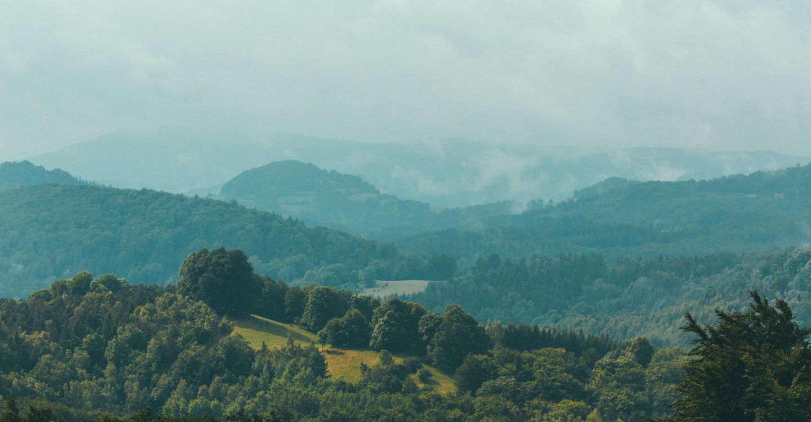
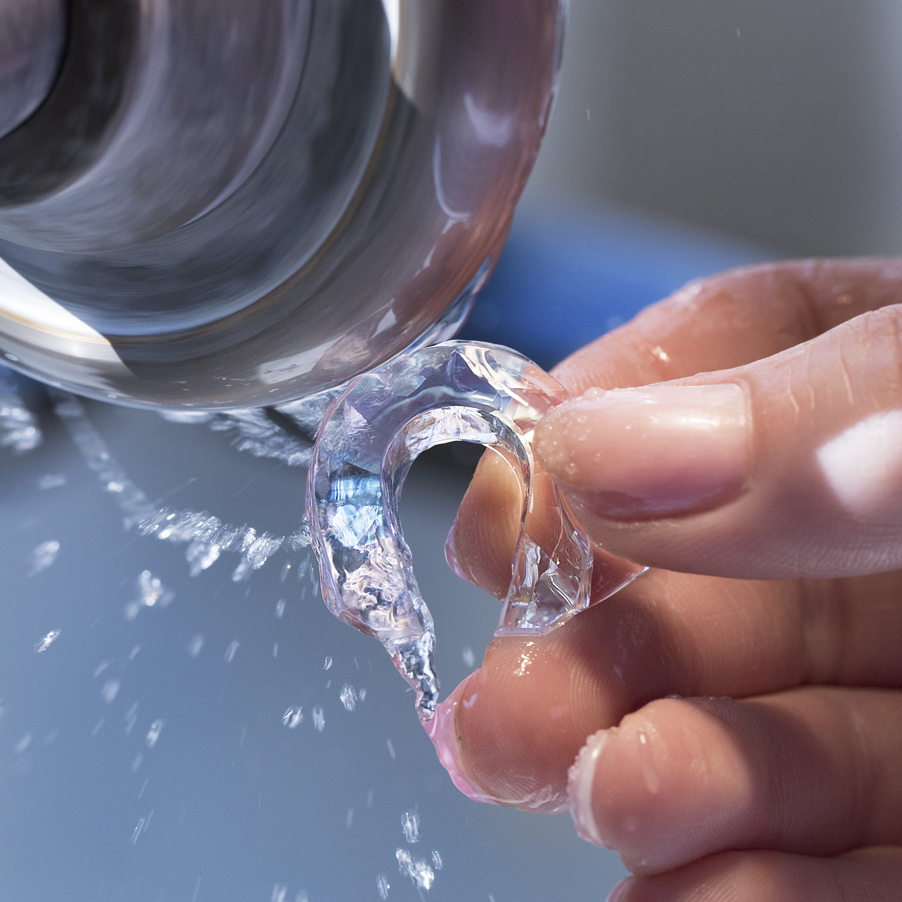
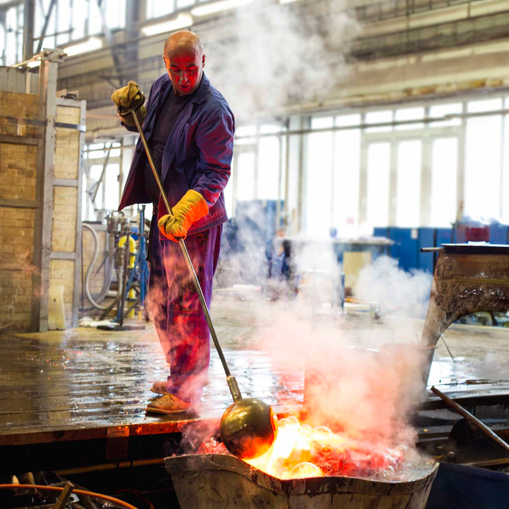
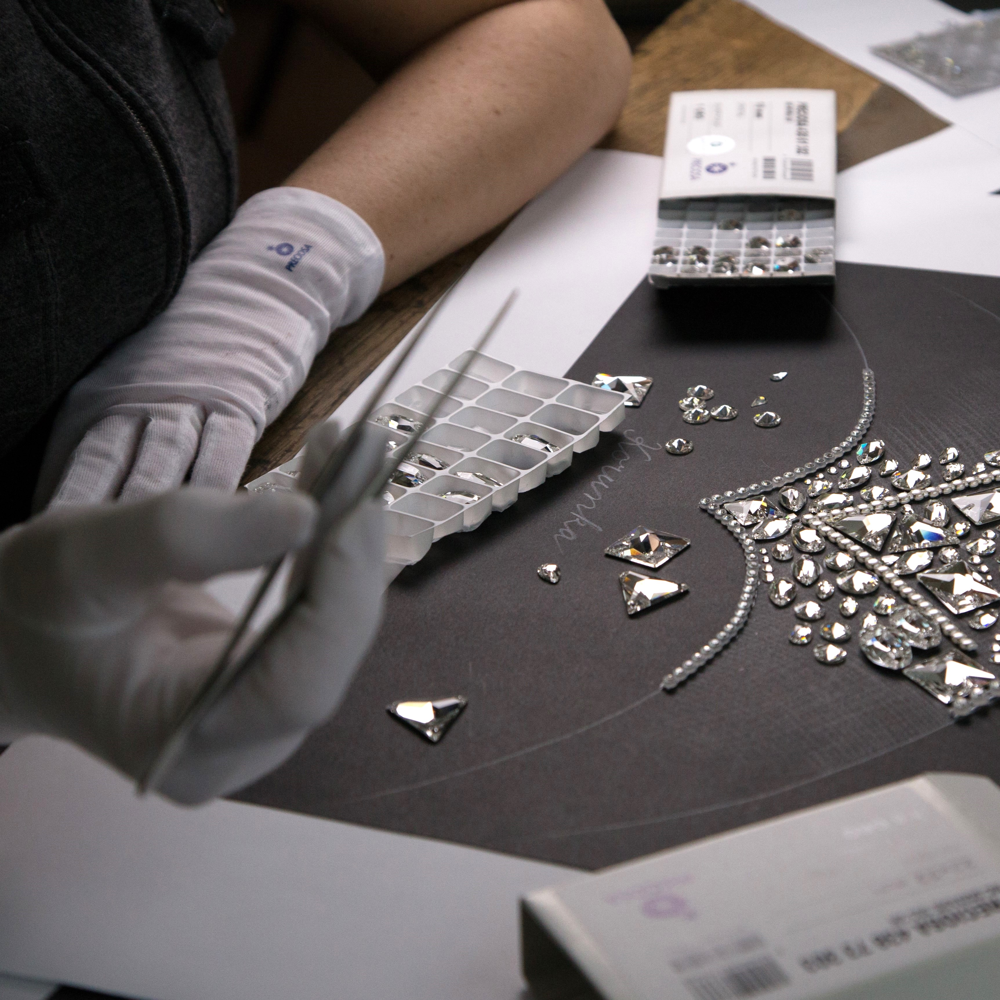

Pískování
Pískování je proces, při kterém se jemným pískem nebo jinými abrazivními materiály stříká na povrch skla. Tento proces umožňuje vytvoření různých povrchových vzorů, textur a designů na skleněných površích.


V oblasti sklářství existuje řada inovativních technologií, které umožňují transformovat obyčejné kusy skla do unikátních uměleckých děl a funkčních předmětů. Tyto technologie zahrnují pískování, lepení, hydroglazuru, vodní paprsek, mačkání a broušení. Každá z těchto metod nabízí jedinečné možnosti zpracování skla, od vytváření textur a vzorů přes spojování a modelování až po zdokonalování povrchu a tvaru.
Každá technologie přináší do oboru sklářství svůj vlastní kreativní přístup a umožňuje umělcům, designérům a řemeslníkům vyjádřit svou kreativitu a oživit skleněné materiály nevídanými způsoby.
Seznamte se s pokročilými technologiemi, které používáme při výrobě a zdokonalování našich skleněných produktů. Každá technologie představuje jedinečný krok v procesu proměny surovin v mistrovská díla, která spojují preciznost, tradici a inovaci.



Pískování je proces, při kterém se jemným pískem nebo jinými abrazivními materiály stříká na povrch skla. Tento proces umožňuje vytvoření různých povrchových vzorů, textur a designů na skleněných površích.
Vodní paprsek je technika, kde se vysokotlakým paprskem vody stříká na povrch skla. Tento proces umožňuje vytváření precizních řezů a vzorů na skle.
Broušení je technika používaná k upravování a zdokonalování povrchu skla. Speciální broušení a brusné materiály se používají k dosažení určitého tvaru, hladkosti a lesku na skleněných předmětech.
Mačkání ve světě sklářství označuje metodiku tvarování a modelování drobných skleněných výlisků podle požadovaných tvarů a křivek. Termín vznikl z procesu, při němž se nahřátá skleněná tyč zmáčkne do formičky pomocí ručního nástroje zvaného sklářské kleště.
Při hydroglazuře se na povrch skla stříká speciální barva, která obarví sklo a vytváří na něm různé vzory a efekty. Tento proces může vytvořit pestrou škálu barevných variací a designů na skleněných površích.
Lepení je technika spojování skleněných částí pomocí speciálních lepidel. Tato lepidla mohou být transparentní, což umožňuje vytvoření pevného spoje bez viditelných přechodů mezi spojovanými kusy skla.
Objevte svět křišťálového umění a inovace, který stojí za našimi výrobky.